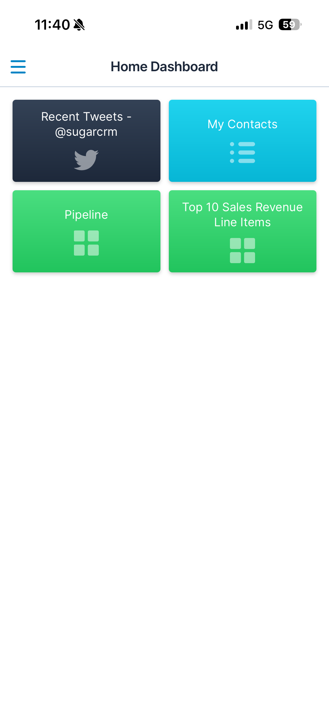
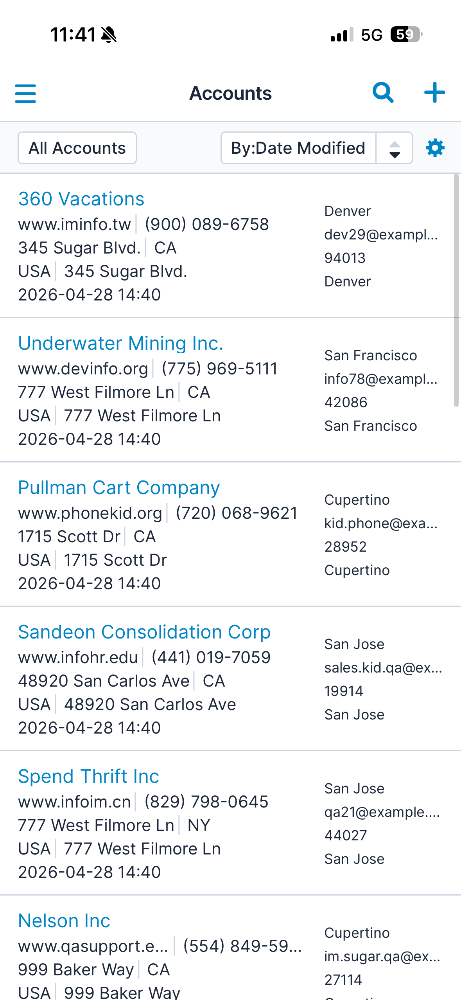
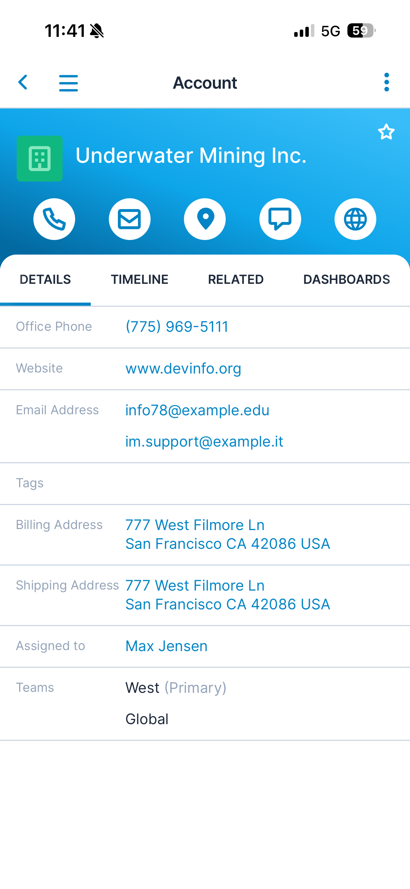
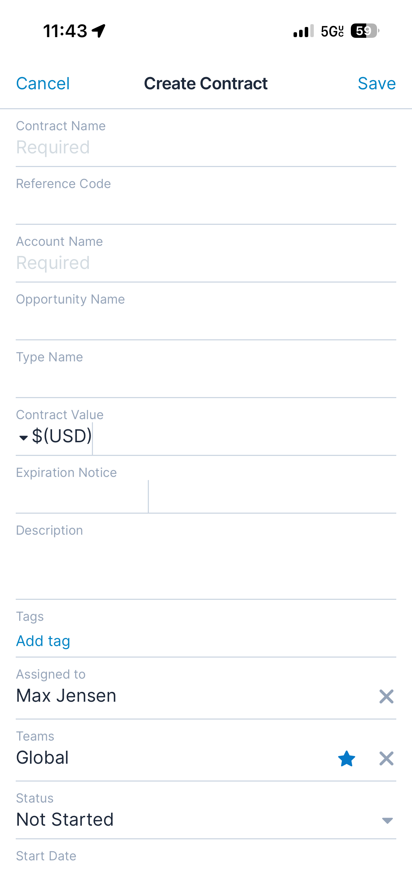
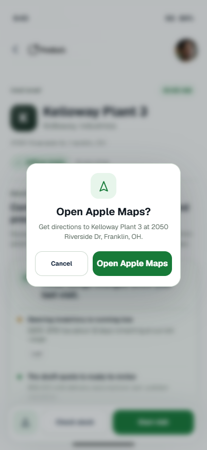
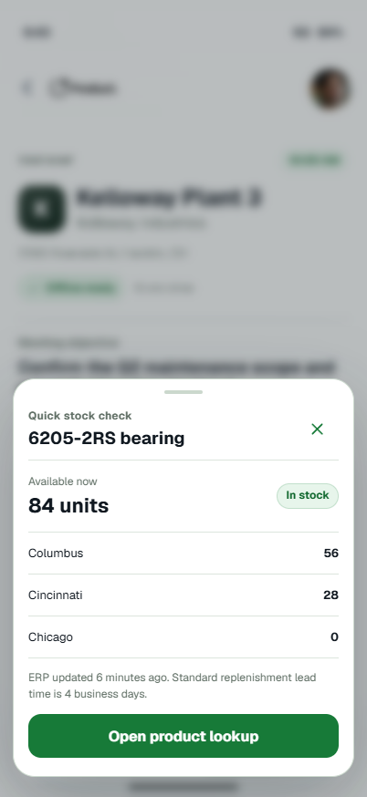
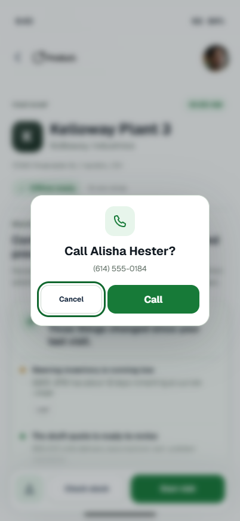
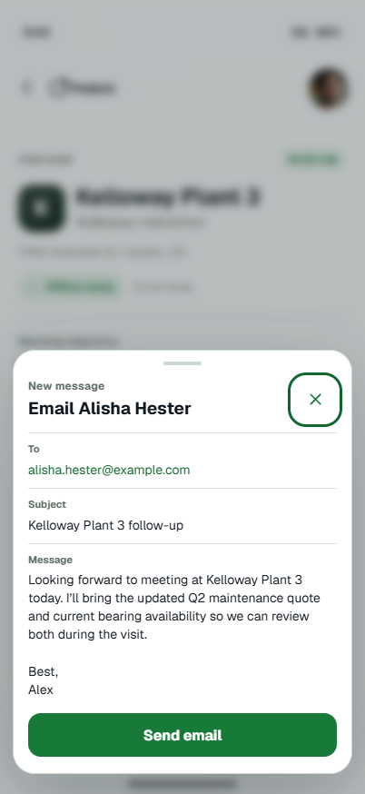

Home dashboard

SugarAI · Mobile CRM · Manufacturing field sales
I redesigned Sugar mobile around the field rep's day: prepare for the next visit, answer customer questions in the moment, capture what changed, and sync clean updates back to CRM.
The problem
Sugar mobile gave reps access to accounts, emails, notes, contracts, leads, opportunities, dashboards, and reports. That access mattered, but the app still made reps assemble what mattered while moving through a customer day.
Most modules reused the same pattern: list view, record view, tabs, related records, and long create forms. The consistency was useful, but it reflected the database more than the conditions reps worked in.
The existing experience starts with the system. The redesign starts with the rep’s next customer.
Problem anatomy
Dashboards showed activity without surfacing the next move. Lists exposed records without ranking urgency. Record views scattered context across tabs and field rows. Create screens asked for more input than a rep should handle on a plant floor.
The opportunity was to move priority, context, and capture into the moment of customer work.
Current app examples
The workflow was possible, but not optimized for mobile use. That created onboarding friction, lowered rep adoption, and pushed people toward pen and paper or other temporary capture methods until they got back to the office.
Home dashboard

List view

Record view

Create form

Field research
I met with five sales reps to understand how field work actually happens: on the road, inside customer facilities, on noisy factory floors, in warehouses, and in low-connectivity areas. They needed account context, product data, ERP inventory, service history, pricing, and fast capture without stopping the conversation.
The pattern was consistent: reps were willing to capture information, but not if the app interrupted the conversation or forced them to rebuild context later.
Before the visit
During the visit
Design challenge
The interviews made the challenge concrete. The redesign needed to show the next customer action, keep account and site context close, support product and service questions during the visit, and turn messy field capture into reviewable CRM updates.
SugarAI could not simply replace modules with chat. It had to reduce the work around the visit while keeping CRM, ERP, catalog, and service context visible enough for reps to trust.
Key decisions
A field rep does not wake up needing Accounts. They need to know where to go, what changed, and what to do when they arrive.
Manufacturing accounts often span plants, warehouses, HQ offices, and service locations. Each site carries different contacts, risks, and work.
Customer identity anchors the workspace. SugarAI appears where it helps: briefings, prompts, capture, and review.
Messy field input becomes suggested CRM updates the rep can inspect, edit, remove, and save with confidence.
These choices became a reusable mobile system: priority visit cards, route cards, offline pills, source badges, quick actions, live capture, outcome controls, suggested update rows, and Ask SugarAI prompts.
The palette separates readiness, availability, AI assistance, and success states so the interface does not make every action feel equally urgent.
Before and after
The redesign does not remove CRM structure. It brings the right records, context, and capture steps forward when they help the rep act.
Start with CRM objects and stitch together context across separate screens.
Start with the rep's day and keep the customer visit moving.
The new concept
The prototype focused on the moments where mobile CRM usually breaks down: preparing before the visit, answering questions during the conversation, capturing updates without a long form, and sending clean CRM updates afterward.
Prototype flows
Supporting actions
The visit flow also needed to handle the actions reps take around a meeting: directions, calls, inventory checks, and follow-up messages.




Current status and testing
To test the concept, reps simulated an on-site visit using the prototype. Three findings shaped the next pass:
Reps could brief themselves without digging through emails or the account record to reconstruct the latest context.
Every rep used voice dictation for the information they wanted to save instead of writing notes to clean up later.
Reps could search by product name instead of opening the Products module and locating the item manually.